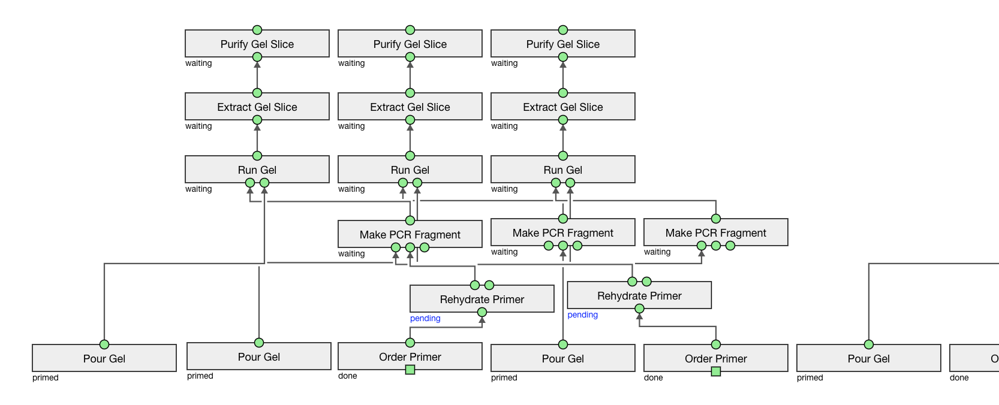
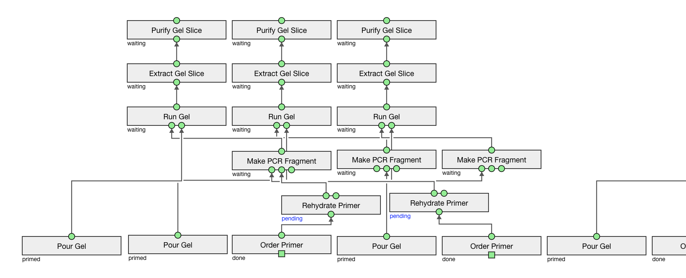

Experiment Planning¶
Trident provides a class to help with creating Aquarium plans, called the “planner”
Features: topological sorting, plan optimizer, drawing
You can draw existing plans (colors represent Operation statuses, legend to come…):
%matplotlib inline
from pydent import planner
canvas = planner.Planner(mysession, plan_id=12345)
canvas.layout.draw()
 

Example of planning a large PCR in a IPython jupyter notebook.
%matplotlib inline
from pydent import planner
from mysession import production
sample_range = list(range(25589, 25604))
canvas = planner.Planner(production)
def set_primer(canvas, field_value, sample):
canvas.set_field_value(field_value, sample=sample)
items = [item for item in sample.items if item.location != 'deleted']
primer_stocks = [item for item in items if item.object_type.name == "Primer Stock"]
primer_aliquots = [item for item in items if item.object_type.name == "Primer Aliquot"]
if len(primer_aliquots) > 0:
# set item
canvas.set_field_value(field_value, sample=sample, item=primer_aliquots[-1])
return
else:
print("No primer aliquots found for {}".format(sample.name))
if len(primer_stocks) > 0:
# create Make Primer Aliquot from Stock
op = canvas.create_operation_by_name("Make Primer Aliquot from Stock")
canvas.add_wire(op.outputs[0], field_value)
canvas.set_field_value(ops[0].inputs[0], sample=sample, item=primer_stocks[-1])
return
else:
print("No primer stocks found for {}".format(sample.name))
# create Order Primer and Rehydrate Primer
op = canvas.create_operation_by_name("Order Primer")
canvas.set_field_value(op.inputs[0], value="yes")
canvas.set_field_value(op.outputs[0], sample=field_value.sample)
ops = canvas.quick_create_chain(op, "Rehydrate Primer")
canvas.add_wire(ops[1].outputs[0], field_value)
return
def submit_pcr(canvas, sample):
op = canvas.create_operation_by_name("Make PCR Fragment")
canvas.set_field_value(op.outputs[0], sample=sample)
fwd = sample.properties['Forward Primer']
rev = sample.properties['Reverse Primer']
template = sample.properties['Template']
set_primer(canvas, op.input("Forward Primer"), fwd)
set_primer(canvas, op.input("Reverse Primer"), rev)
canvas.set_field_value(op.input("Template"), sample=template)
new_ops = canvas.quick_create_chain(op, "Run Gel", "Extract Gel Slice", "Purify Gel Slice")
run_gel = new_ops[1]
canvas.quick_create_chain("Pour Gel", run_gel)
from pydent.utils import make_async
@make_async(chunk_size=1, progress_bar=False)
def submit_pcrs(sample_range):
for sample_id in sample_range:
submit_pcr(canvas, production.Sample.find(sample_id))
return []
# submit PCR asynchrounous to the canvas
submit_pcrs(sample_range)
# optimize the plan
canvas.optimize()
# topologically sort the layout
canvas.layout.topo_sort()
# draw the layout
canvas.layout.draw()
# push the plan to Aquarium
canvas.create()
# display the Aquarium plan url
canvas.url